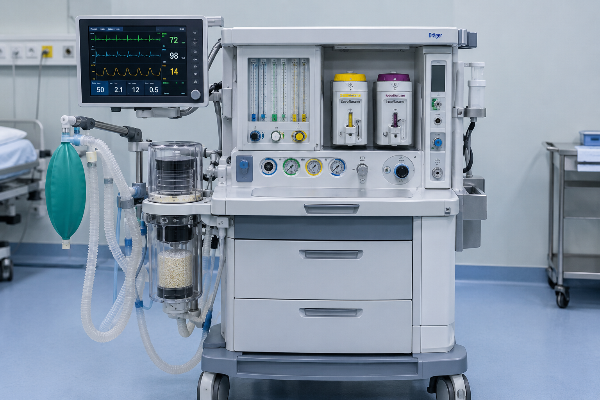

دستگاه بیهوشی
دستگاه بیهوشی یا دستگاه بویل یکی از دستگاههای مورد نیاز برای اتاق عمل است که عملکرد اصلی آن کنترل
سیستم تنفس بیمار در حین بیهوشی میباشد.
بدین منظور اکسیژن و گازهای بیهوشی مورد نیاز در حین عمل جراحی توسط این دستگاه به بیمار انتقال داده
میشود و دی اکسید کربن اضافی خارج میشود.
رایج ترین نوع دستگاه بیهوشی طراحی شده که در سراسر دنیا توسعه یافته و در حال استفاده میباشد، دستگاه
بیهوشی با جریان پیوسته است.
این دستگاه میزان ثابت و مشخصی از مخلوط گازهای طبی مثل اکسیژن یا دی نیتروژن مونوکسید را با میزان
ثابتی از گازهای بیهوشی مانند ایزوفلوران ترکیب میکند و نهایتا جریانی با فشار ثابت و امن برای بیمار
فراهم میشود.